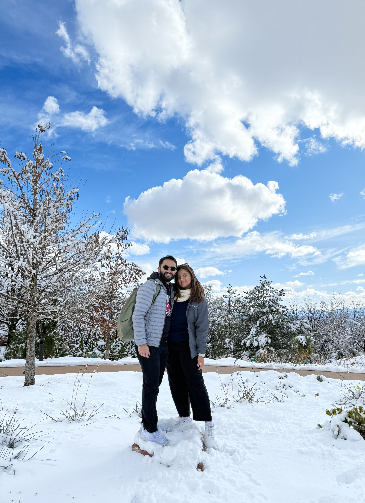
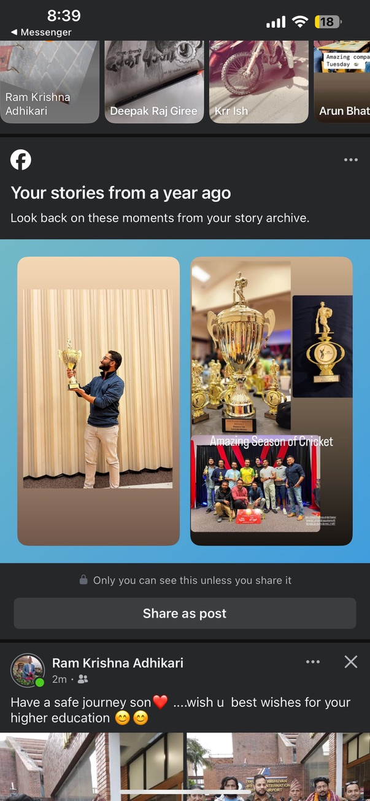
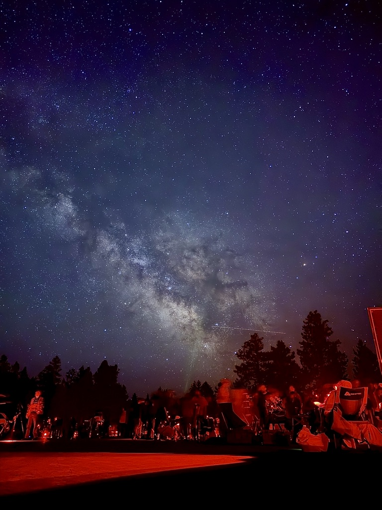
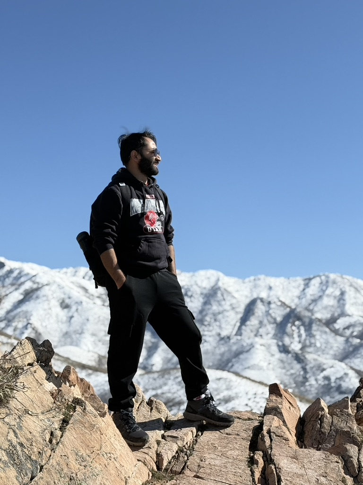

I am a graduate student in the Department of Physics and Astronomy at the University of Utah,
where my research spans multiple, dynamic fields. I am deeply involved in projects with Professor Carsten Rott and
Professor Shiqi Yu, focusing on renewable energy solutions and advanced neutrino search analysis. My academic journey
began at Tribhuvan University in Nepal, where I completed my bachelor's degree in 2019. During my undergraduate studies,
I delved into various research areas, including the environment surrounding Asymptotic Giant Branch (AGB) stars, a study
on solar wind using data from the Parker Solar Probe (PSP), and an investigation into geomagnetic activity.
These early experiences fueled my passion for data analysis and statistics. My current Ph.D. research includes the exploration of cosmic
phenomena with the help of machine learning. I work with Professor Shiqi Yu and undergraduate Ryan on a project aimed
at sorting new catalogs of Seyfert galaxies using data from various X-ray telescopes. We leverage the power of transformer
machine learning models to efficiently classify these galaxies and perform a subsequent search for neutrino emissions. This research is crucial
for identifying new astrophysical sources and expanding our understanding of high-energy neutrinos.
In collaboration with Professor Carsten Rott and Vedant Basu, my work also focuses on renewable energy solutions for the next-generation
IceCube Neutrino Detector (IceCube-Gen2). This project aims to conduct a comprehensive feasibility study to power the new detector with
sustainable energy. Our research combines extensive simulation-based analysis with on-site field tests. This approach
allows us to understand the power output from solar panels under diverse environmental conditions. In August 2024, we took a significant step by shipping
four bifacial solar panels to the South Pole. This setup will provide invaluable data on their performance in a uniquely harsh and highly
reflective environment. We expect the setup to be completed by January 2026. This initiative not only supports the IceCube-Gen2 project but also helps us
understand the logistical and physical challenges of deploying technology in such an extreme climate.
Academic
Space for my academic
← Back to About Me
Academic Overview
I completed my Bachelor's degree in Physics from Tribhuvan University, Nepal, in 2015. Following that, I pursued a Master's degree in Physics from the University of Texas at Arlington, graduating in 2018. Currently, I am a Ph.D. candidate at the University of Utah, where I am deeply involved in research related to neutrino astrophysics and renewable energy solutions for extreme environments.
← Back to About Me
My Hobbies



Hiking
I enjoy hiking in the scenic mountains of Utah and exploring the diverse landscapes. It's a great way to disconnect and appreciate nature. My favorite trails offer stunning views and a challenging, yet rewarding, experience.
Night Sky Photography
I am passionate about night sky photography. I often travel to dark sky locations to capture the beauty of the stars, Milky Way, and other celestial objects. This hobby combines my interest in physics and my love for the outdoors, providing a unique perspective on the universe.
Cricket
As an avid cricket fan, I follow both local and international matches. It's a sport that combines strategy, skill, and teamwork, and I enjoy both playing and watching the game. My interest in cricket began in my youth and continues to be a favorite pastime.
← Back to About Me
My Projects
I have worked on several projects that showcase my skills and interests. Here are a few highlights:
- Project 1: Description of project 1.
- Project 2: Description of project 2.
- Project 3: Description of project 3.
My Research
My research expands across three distinct areas. Click on a link in the sidebar to view a detailed description of each field.
← Back to Research
Solar Panels & Renewable Energy
For the next-generation South Pole Experiment, my work focuses on a feasibility study of renewable energy at the South Pole.
The primary focus is on solar panels, but the research also includes wind power as a secondary source.
My research involves both **field testing** and **large-scale simulations** to determine the viability
and optimal design for a renewable energy system in the extreme polar environment. This work is critical for
ensuring the sustainability and efficiency of future scientific endeavors at the pole.
← Back to Research
Neutrino Emission Analysis
Using data from the **IceCube Neutrino Detector**, my research involves a targeted search for neutrino emissions
from active galactic nuclei (AGN). I utilize a **disk-corona model** to analyze the data and pinpoint potential astrophysical
sources of high-energy neutrinos.
A significant part of this work is **combined analysis**, where I merge two distinct IceCube datasets to improve the signal-to-noise
ratio and increase the sensitivity of our searches. This method allows us to conduct more comprehensive studies and make more precise
measurements of cosmic phenomena.
← Back to Research
Machine Learning in Physics
My research also extends to the application of **machine learning (ML)** techniques to enhance both of my primary research fields.
For the solar panel feasibility study, I use ML models to predict energy generation based on weather patterns and environmental data.
In neutrino analysis, I develop ML algorithms to more efficiently identify and classify neutrino events within the vast datasets collected by IceCube.
This approach helps to filter out background noise and focus on the most scientifically valuable events.